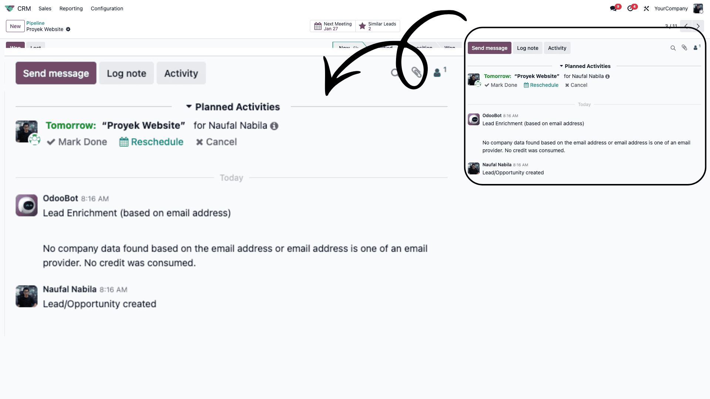

Chatter adalah area komunikasi yang ada di sebelah kanan (atau bawah) setiap record/dokumen di Odoo. Ini adalah pusat sejarah dari dokumen tersebut.
Ada dua fungsi utama komunikasi di sini:
- Send Message: Mengirim email kepada pelanggan atau pihak eksternal. Balasan mereka akan otomatis masuk ke Chatter ini.
- Log Note: Catatan internal untuk tim. Pesan ini tidak akan terkirim ke pelanggan.
Tips: Gunakan Log Note untuk diskusi internal rahasia atau catatan
penting tentang perubahan dokumen.

📸 Screenshot: Tab Send Message vs Log Note